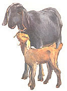
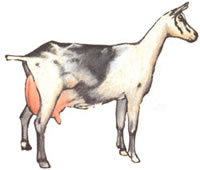
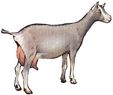
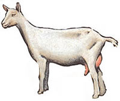
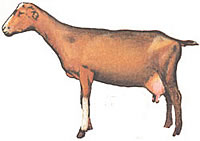
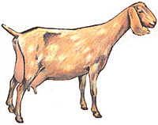

Solomon said, "Thou shalt have goat's milk enough for thy food, for the good of thy household, and for the maintenance of thy maiden". . . a statement that - besides extolling the beverage-producing attributes of these caprine creatures - goes to show that the generous beasts have been domesticated for a long time! However, a modern goat enthusiast might wish to add to Solomon's wisdom, noting that - over and above its ability to produce healthful dairy products - the "poor man's cow" can be a pretty danged amusing and lovable animal to have around.
Furthermore, the milkers are exceptionally easy keepers, each requiring only half (or less) the barn space that the "competitor" cow needs... and they're able to forage nutrients from particularly barren land if necessary. Sadly goats, are often taken for granted and looked upon as mere "lawn mowers". Yet - like many other animals - if they're treated with care and affection, these lively and temperamental characters can provide any homestead with plenty of milk and cheese. . . plus a great deal of pleasure.
Perhaps this "goat fieldbook" will help you decide which of the common breeds might best serve your family.
French Alpines attain a minimum height of 30 inches and a weight of about 135 pounds. One of the hardiest of all goat breeds, they are very ruggedly built and can be any of an almost endless variety of color combinations. "Alps" will sometimes produce as much as 5,000 pounds of milk per lactation period (37 to 48 weeks long).
Toggenburgs hail originally from the Toggenburg Valley in the Swiss Alps. They're small (about 26 inches and 120 pounds), sturdy, vigorours goats. . . and in spite of their size, the animals can produce 3,500 pounds of milk in a lactation period.
Saanens, also natives of Switzerland, are very popular. . . they can produce up to 5,200 pounds of milk per lactation period. Saanens may be 30 inces tall and weigh about 135 pounds. They are placid animals and distinguished looking in their white coats.
La Manchas are a recently developed American goat, derived from a cross between a Spanish breed and other varieties. They reach a minimum height of 28 inches and a weight of 130 pounds . . . and in one lactation period are able to produce close to 2,500 pounds of milk. Their most outstanding physical characteristic is ears so small that they seem almost nonexistent.
Nubians, which are sometimes referred to as "the Jersey of goats" because of their milk is quite rich in butterfat, are among the most popular of all breeds and can produce as much as 4,000 pounds of milk in one lactation period. "Nubes grow to a minimum height of 30 inches and a weight of some 135 pounds. They can be very affectionate and, at the same time, very stubborn creatures.
|
 |
 |
 |
|
 |
 |
 |